DCRW examples
examples.RmdThese examples all use the first-differenced correlated random walk (DCRW) model, a type of linear Gaussian SSM. This model is detailed in . The DCRW model has the following observation and state processes, where is the location observed by the satellite, is the error from the satellite measurements, is the true location of the whale, and captures the randomness in the whale’s movement. Both and are 2-dimensional vectors containing longitude and latitude coordinates. The DCRW model assumes that the whale’s location depends on the previous location , and the previous direction and speed of movement . The amount of dependence on is determined by the correlation parameter .
Notice the use of instead of $\bx$ for the state process; the DCRW model as presented in is not in state-space form since the state process depends on the previous states, and . This presentation makes it easier to understand the model dynamics, but in order to estimate the parameters of the model, the model must be converted into state-space form.
We use a diagonal structure for the observation error variance matrix, allowing for different variances to be estimated for the longitude and the latitude directions, $$\begin{align*} \bSigma_\mathbf{v} &= \left[\begin{matrix}\sigma^2_{\mathbf{v},\text{lon}} & 0 \\ 0 & \sigma^2_{\mathbf{v},\text{lat}} \end{matrix}\right]. \end{align*}$$ A similar matrix is used for the state error variance matrix $\bSigma_\mathbf{w}$.
Blue whale (2008)
whale_2008 = read_csv("data/Blue whales Eastern North Pacific 1993-2008 - Argos Data.csv") |>
# Standardise column names
janitor::clean_names() |>
# Keep only rows for the whale with ID "2008CA-Bmu-10839"
filter(individual_local_identifier == "2008CA-Bmu-10839") |>
# Replace missing values in 'manually_marked_outlier' with FALSE
mutate(manually_marked_outlier = tidyr::replace_na(manually_marked_outlier, FALSE)) |>
# Round timestamps to the nearest 12 hours
mutate(timestamp = lubridate::round_date(timestamp, "12 hours")) |>
# Within each group, keep only the last row (e.g. latest observation per 12-hour block)
group_by(timestamp) |>
slice_tail(n = 1) |>
# Convert the data to a tsibble object (time series tibble)
tsibble::tsibble() |>
# Fill in missing time points in the series with explicit gaps
tsibble::fill_gaps() |>
# Convert back to a regular tibble
as_tibble() |>
# Rename longitude/latitude columns to x and y
rename(x = location_long,
y = location_lat)Plot with world map data:
library(rnaturalearth)
library(rnaturalearthdata)
#>
#> Attaching package: 'rnaturalearthdata'
#> The following object is masked from 'package:rnaturalearth':
#>
#> countries110
library(sf)
#> Linking to GEOS 3.13.0, GDAL 3.8.5, PROJ 9.5.1; sf_use_s2() is TRUE
# Get country boundaries as an sf object
world <- ne_countries(scale = "medium", returnclass = "sf")
# Work out x/y ranges with some padding
x_range <- range(whale_2008$x, na.rm = TRUE)
y_range <- range(whale_2008$y, na.rm = TRUE)
x_pad <- diff(x_range) * 0.05 # 5% padding
y_pad <- diff(y_range) * 0.05 # 5% padding
whale_2008 %>%
ggplot() +
# Country boundaries
geom_sf(data = world, fill = "grey95", colour = "grey70", size = 0.3) +
# Whale track and points
geom_path(aes(x = x, y = y, colour = timestamp), alpha = 0.2) +
geom_point(aes(x = x, y = y, colour = timestamp)) +
# Colour scale
viridis::scale_color_viridis() +
# Focus map on whale’s range
coord_sf(
xlim = c(x_range[1] - x_pad, x_range[2] + x_pad),
ylim = c(y_range[1] - y_pad, y_range[2] + y_pad),
expand = FALSE
) +
# Labels and theme
labs(x = "Longitude", y = "Latitude", subtitle = "whale_2008") +
theme_minimal() +
theme(legend.position = "none")
#> Warning: Removed 21 rows containing missing values or values outside the scale range
#> (`geom_point()`).